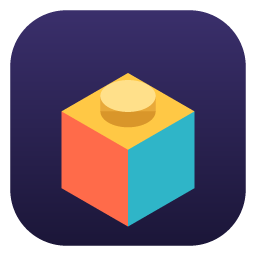

Hi, I'm coopa. I write renderers, physics, water, world generators and the
tools that drive them, in modern C++ on Vulkan. My main project is
toyengine, an open source 3D engine with its own Blender-style editor.
↖ Gerstner waves on a grid of blocks. Move your cursor to make ripples.
C++20header-only libs
Vulkandeferred PBR
7coopa libraries
9demo scenes
2platforms: Linux + macOS

Main project · open source · v0.1.0
toyengine
A modern C++20 / Vulkan 3D game engine with a Blender-style editor.
toyengine pairs a full-resolution deferred PBR renderer with rigid-body and cloth physics,
dynamic water, streamed procedural terrain, an interactive UI toolkit and a native editor
that writes exactly the files the game loads. It's adaptable by design: scenes, objects,
materials and render settings are plain YAML, every rendering feature has a quality tier and a
master switch, and each subsystem is its own library you can lift out and use elsewhere.
It runs on Linux and on Apple Silicon Macs through MoltenVK.
water_test: lake, river, foam, ripples, buoyant crates
Crisp screen-space HUDs, or world-space canvases that stay clickable in 3D
toyengine_editor
An editor that feels like Blender
The editor embeds the real engine, so its Full Render viewport is the game's renderer.
It uses Blender's keymaps, gizmos, modes and outliner, and Unity's component model.
Scenes and object assets. Hierarchy, inspector, gizmos, and play / pause / step in place. Prefab-style assets are instanced with prefab:.
Mesh modelling. Extrude, inset, bevel, loop cut, bridge, Catmull-Clark subdivide, mirror and UVs. Sculpt with draw, smooth, inflate, grab and flatten.
Material lookdev. Shader ball, studio lighting, turntable.
Build › Package. Turns a project into compact .caml binaries.
Plain files. Everything saves as YAML in assets/, so you can hand-edit, diff and merge it.
Scenes are trees of objects with components, written in YAML. The demo scenes are heavily
commented and serve as the reference for every component. config.yaml has a comment
on every key. When you ship, every loader also reads binary .caml
(Zstandard + AES-256-GCM), so a packaged project needs no path rewriting.
Every subsystem is a standalone, header-only library with its own README. The engine is just the thing that snaps them together.
Data you can diff
Scenes, materials and settings are commented YAML. Binary only happens at package time, and the loaders don't care which they get.
One truth, both sides
The Gerstner wave math runs on the GPU and in a CPU surface query, so a crate bobs exactly where the water looks like it is.
Deterministic by default
Seeded worlds are byte-identical on Linux and macOS. That means shipping libstdc++-exact random and sort functions and building with -ffp-contract=off.
Off really means off
Each render feature has quality tiers and a master switch that costs nothing when disabled. PROFILE=1 writes per-feature GPU and CPU timings to CSV.
Headless and tested
Engine and editor suites run under ctest. Render tests use a never-mapped window, and HEADLESS, ONESHOT and FIXED_DT make captures reproducible.
Tools people already know
Blender's keymaps and modes, Unity's components. If you've used either, the editor already makes sense.
Close to the metal
Vulkan with RAII wrappers I own end to end, from device objects up to the deferred renderer, on Linux and on Apple Silicon via MoltenVK.
Let's build something
toyengine is open source. Clone it, break it, or open an issue. I'm always up for talking engines, rendering and tools.